Still Moment ist eine App für geführte Meditationen aus den eigenen MP3s und für stille Meditation mit einem anpassbaren Timer. Die Bibliothek — der Aufbau einer persönlichen Sammlung aus eigenen Audiodateien — ist das Kern-Feature; der Stille-Meditations-Timer ist die Ergänzung. Alles läuft lokal auf dem Gerät: kein Konto, keine Cloud, keine Ablenkung.
Der typische Ablauf: Meditation starten, Handy weglegen, der Sperrbildschirm geht an — währenddessen passiert nichts anderes. Diese Referenz fasst zusammen, woran sich jede Design-Entscheidung misst, und dokumentiert Farb-Tokens und Typografie der App.
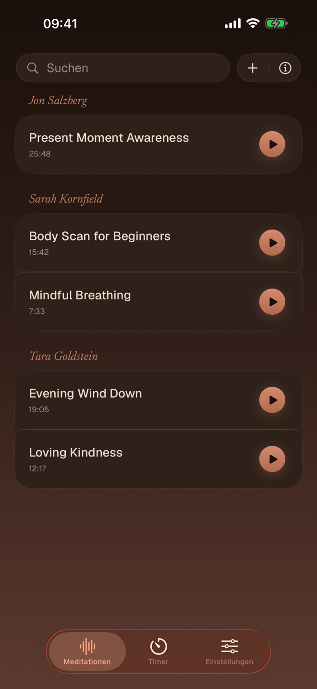
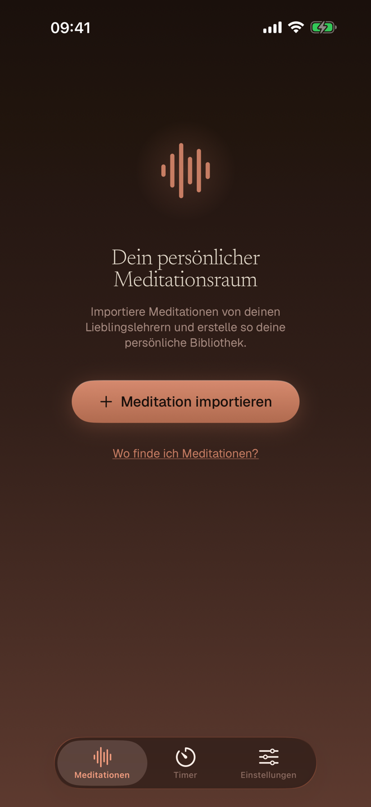
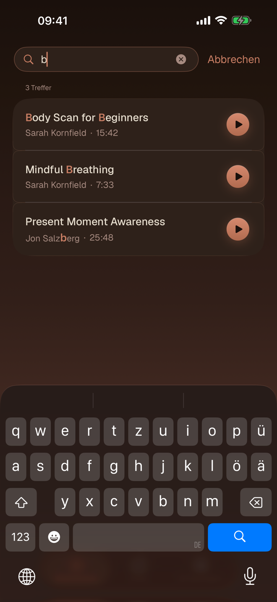
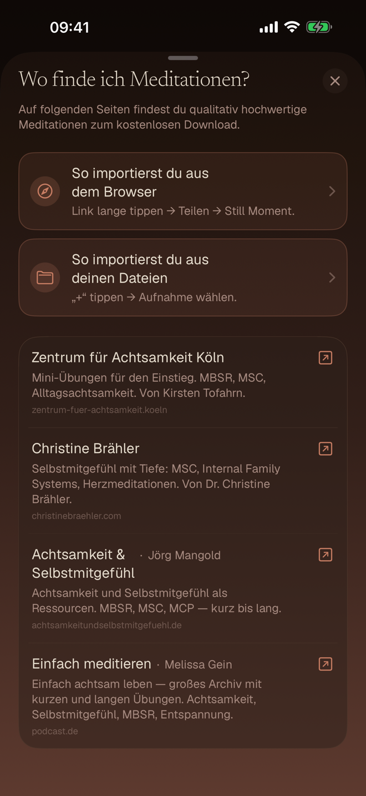
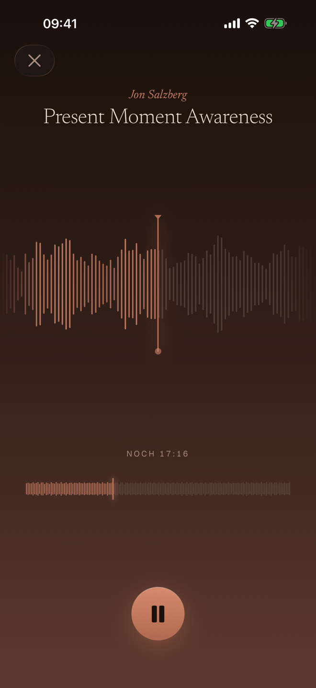
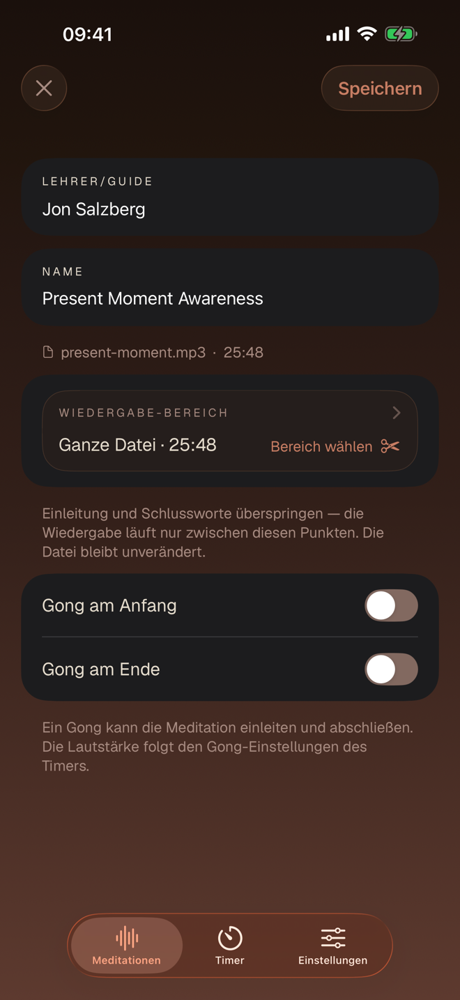
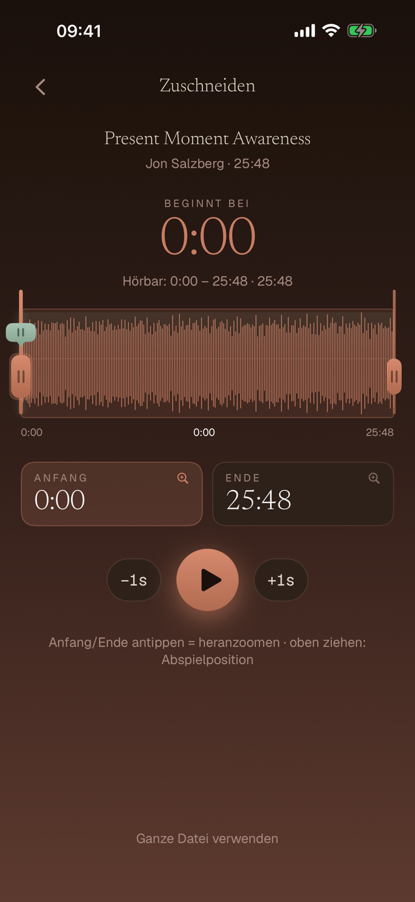
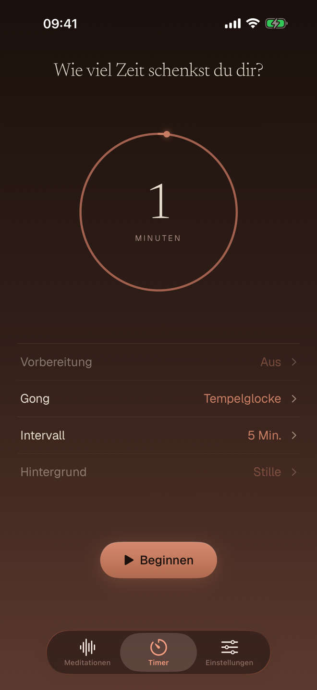
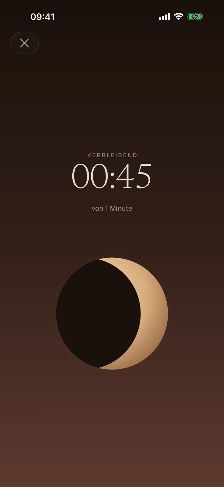
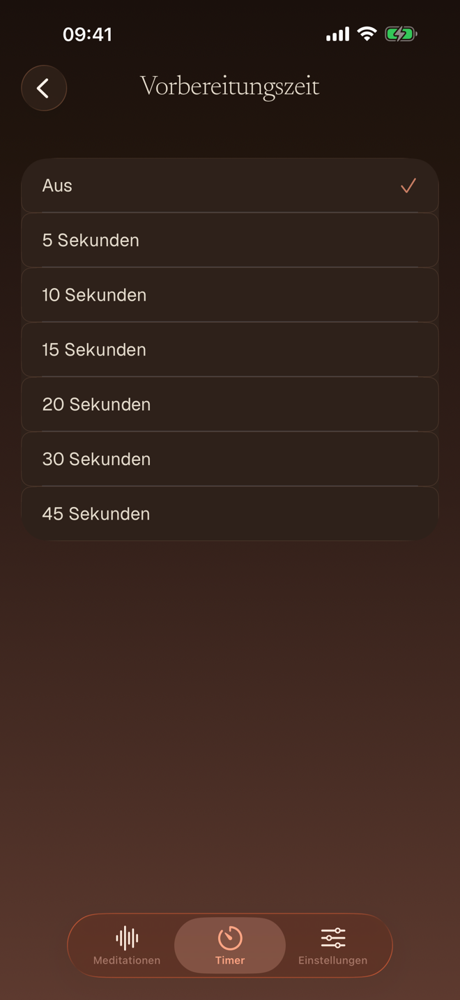
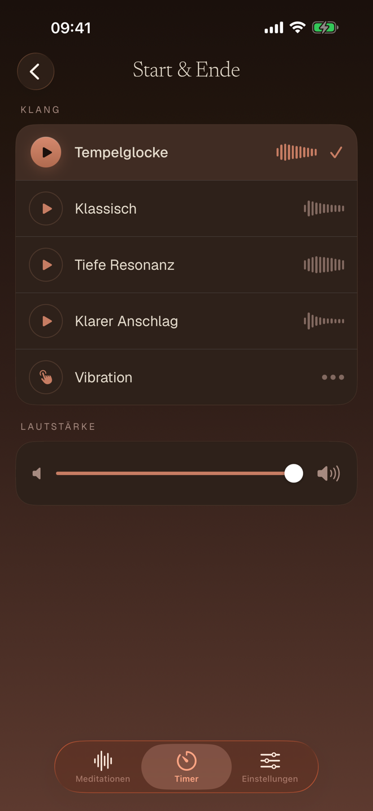
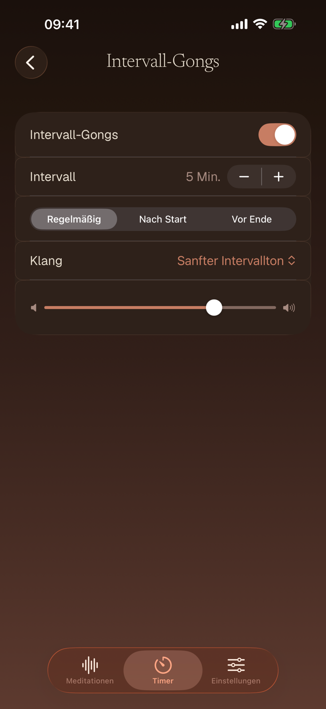
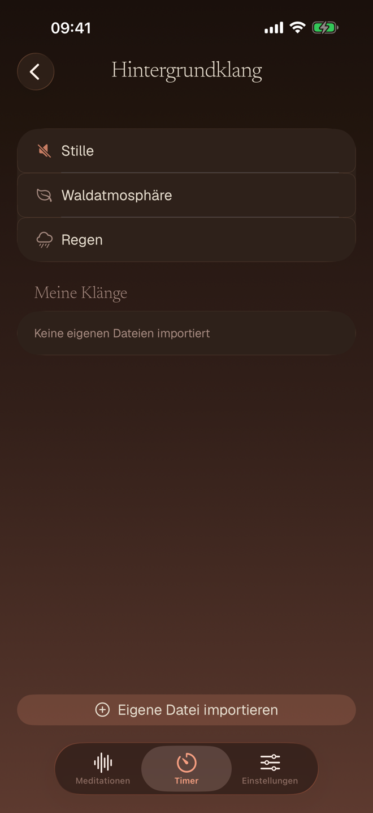
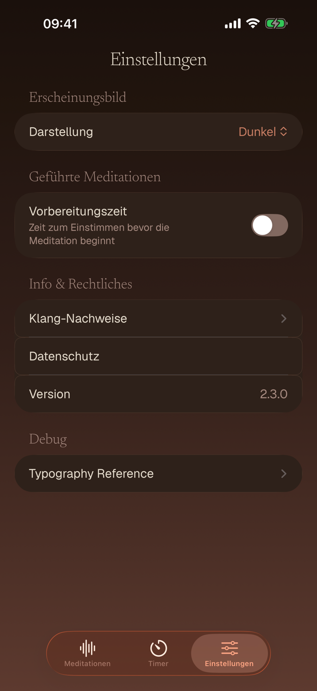
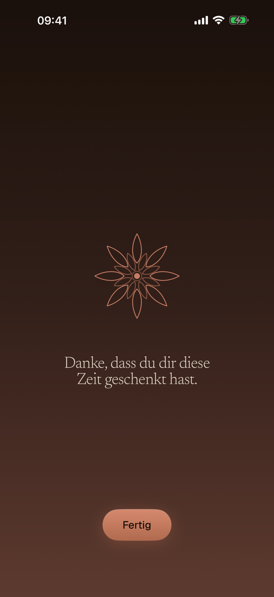
Eine warme Palette („Candlelight") in zwei Varianten — Hell und Dunkel. Views referenzieren ausschließlich semantische Rollen, nie direkte Werte. Statische Color-Properties wären nicht reaktiv; das Theme kommt über das Environment.
| Rolle | Hell | Dunkel | Verwendung |
|---|---|---|---|
| textPrimary | #3A2418 | #E5DCCD | Haupttext, Überschriften |
| textSecondary | #7A4E3C | #A68A80 | Nebentext, Section-Header, Hinweise |
| interactive | #A2503E | #C77D63 | Buttons, Icons, Slider, Links, Lehrer-Name |
| textOnInteractive | #FFF6E6 | #1A100C | Text auf farbigen Buttons |
| progress | #A2503E | #C77D63 | Timer-Ring, Fortschritt (= interactive) |
| controlTrack | #949379 | #826F60 | Inaktive Toggle-/Slider-Bahn (≥ 3:1) |
| error | #BA1A1A | #E06161 | Fehlermeldungen |
| Rolle | Hell | Dunkel | Verwendung |
|---|---|---|---|
| backgroundPrimary | #FBEEDB | #1A100C | Primärer Screen-Hintergrund |
| backgroundSecondary | #F6CDA8 | #321F19 | Sekundär, Gradient-Stop |
| cardBackground | #FFF6E6 | #2E211A | Karten, TabBar (= tabBarBackground) |
| cardBorder | rgba(120,55,28,.11) | #4E382C | Karten-Rahmen |
| ringTrack | #C8B5A1 | #A16C4E | Timer-Ring Hintergrund |
| accentBackground | #E8A074 | #5D3A2F | Dekorativer Akzent, Gradient-Stop |
| Rolle | Hell | Dunkel | Verwendung |
|---|---|---|---|
| divider | rgba(120,55,28,.14) | rgba(242,228,211,.10) | Trennlinien (Akzent-Familie) |
| playGradientTop | #B85F46 | #D68A6E | Play-Button Gradient oben |
| playGradientBot | #7E3A2D | #B06A4F | Play-Button Gradient unten |
| playheadAccent | #5E7A6B | #8AA896 | Sage-Akzent Abspielposition (Trim) |
| playheadAccentHi | #7FA08E | #A7C2B1 | Heller Sage-Akzent (Greifer, Linie) |
Berechnet zur Laufzeit aus Basis-Rollen — garantiert Konsistenz: accentBannerBackground = interactive @ .10 · accentBubbleBackground = interactive @ .18 · dialActiveArc / dialDropletCore / settingsValueAccent = interactive · dialDropletHalo = interactive @ .18 · settingsDivider = divider · tabBarBackground = cardBackground · playheadTrack = playheadAccent @ .18 · textOnPlayhead = #132E1C · backgroundGradient = primary → secondary → accentBackground.
Opacity-Skala: overlay .20 · shadow .30 · secondary .50 · tertiary .70 · cardShadow .08. Alle Text-auf-Hintergrund-Kombinationen erfüllen WCAG 2.1 AA (automatisiert getestet).
Zehn Tokens, niemals mehr. Hierarchie entsteht über Farbe, nicht über neue Tokens — sekundärer Text ist derselbe Token mit Sekundärfarbe. Jeder Token bindet über UIFontMetrics an einen System-TextStyle und skaliert mit Dynamic Type. Newsreader (Serif) trägt die ruhigen, großen Flächen, Geist (Sans) die funktionalen.
* display ist container-relativ (Timer-Countdown / Dial), nicht an eine feste pt-Größe gebunden — hier verkleinert dargestellt. Alle pt-Werte gelten bei Dynamic-Type-Stufe „Large".
| Standard | bei „Fetter Text" (Accessibility) | Tokens |
|---|---|---|
| Geist Regular | Geist Medium | body · caption · micro · eyebrow |
| Geist Medium | Geist SemiBold | bodyEmphasis |
| Newsreader Light | Newsreader Regular | display · title · screenTitle · section |
| Newsreader Italic | Newsreader Italic | bodyItalic (kein Bold-Italic-Schnitt) |